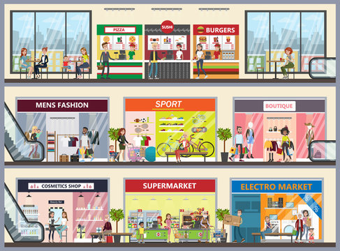
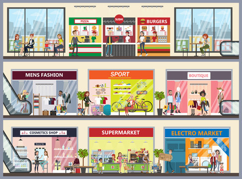

Mall of the South is in one of the wealthiest suburbs in the south of Jo’burg, particularly Aspen Hills, which attracts the affluent resident with a taste for luxury brands. The 67 887m² regional shopping Centre is a retail market leader in mall innovation offering pure shopping pleasure and convenience with over 160+ fabulous stores. The Centre is easily accessible from two main arterial roads, namely Kliprivier Drive and Swartkoppies Road. Mall of the South offers a high-end modern shopping experience where shoppers can enjoy an exciting tenant mix including all the major banks, anchor tenants; Checkers, Woolworths, Pick ‘n Pay, Edgars, Dischem, Clicks and more. With notable aesthetic features such as fountains, indoor trees and greenery, the mall is easy on the eye and provides shoppers with an open and refreshing atmosphere.